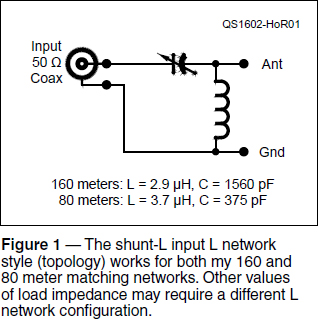
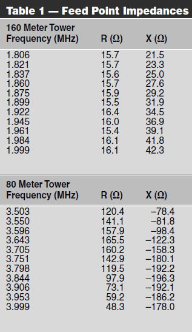
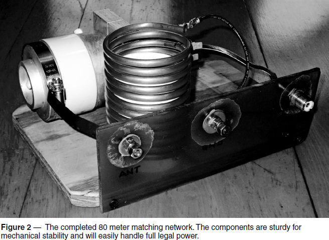
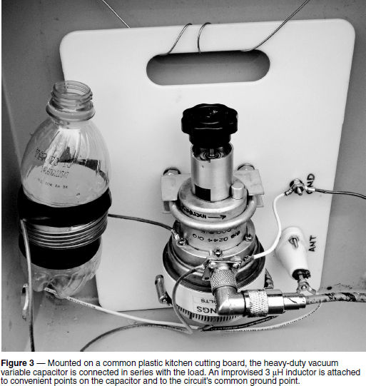

Experiment #157 — Matching — Network Design and Build
There comes a time in every ham’s experiences when a single-band antenna needs to have its feed point impedance matched to 50 Ω. If practical, matching the antenna to 50 Ω at the feed point is the way to go and the subject of this month’s column. You can apply the general process to your antenna farm, too.
I recently built two 60-foot towers to be used as base-fed monopole verticals on 160 and 80 meters. Both had significant top-loading from beams and mast extensions that lowered the frequency of quarter-wave resonance below the intended bands, so I decided to whip up an L network for each.1
It’s possible to just find a variable inductor and capacitor, hook them up, and start cranking in hopes of finding a match. But wouldn’t it show a little more radio savoir faire to do a proper design?
Building by Design
Any design of a matching network begins with measuring the impedance you want to match, which sounds obvious but is often overlooked. This was a perfect opportunity to make use of my new SARK 110 Antenna Analyzer (www.sark110.com) to characterize what was happening at the base of my towers. Table 1 shows the impedances at selected frequencies across 160 and 80 meters.
The 160 meter tower consists of 60 feet of Rohn 25 topped by a C-31XR triband Yagi and 20 additional feet of 2-inch aluminum mast. Forty copper radials surround the bottom. The resonant frequency is 1.65 MHz (Z = 18.5 + j 0.03 Ω) and the resistance is stable between 15 and 17 Ω across the band with the positive inductive reactance climbing to 42.3 Ω at the top of the band. The average impedance across the band is 15.8 + j 32.1 Ω.
The 80 meter tower is the same height, topped with an EF-230 two-element 30 meter beam and an XR5-T multiband HF Yagi on 6 feet of mast above the tower. There were no resonances observed between 2 and 6 MHz although reactance does dip to –65 Ω just above 3 MHz. Across the 80/75 meter band, impedance varies quite a bit as shown in the table, averaging 116.9 – j 151.8 Ω.
Striking a Match
Once you have a good set of measurements (hold that thought) you can start coming up with a buildable network. I entered the average values of impedance into the online matching network calculator by John Wetherell, which gives component values for 16 types of networks.2 For both bands, there were two unworkable versions of the L network: either the math “blew up,” resulting in NaN (Not a Number), or negative values were generated for one or more of the component values.
Note that the Q value for an L network is fixed at the ratio of the source and load impedances. Q determines the matching bandwidth, and higher values of Q also means higher values of circulating current and peak voltage in the components. If the input and output impedances are very different, investigate networks that transform impedance in smaller steps.
Of the two remaining networks, I selected the circuit in Figure 1 for both networks, because I had a pair of heavy-duty 2000 pF vacuum-variable capacitors thanks to K9SD. The inductors I would wind myself, so I logged on to the K7MEM Single-Layer Air-Core Inductor Design website.3 This calculator produces a fairly accurate single-layer, air-core design with lots of options for adjusting mechanical dimensions.

Figure 2 shows the completed 80 meter matching network. Wanting a low-loss, mechanically sturdy coil, I wound it on a 23⁄4-inch O.D. PVC coupling from 20 feet of 1⁄4-inch O.D. soft-copper refrigeration tubing. (This tubing is available inexpensively from hardware stores in a number of diameters.) The 20-foot length was enough tubing for a couple of extra turns. I soldered quick-disconnect male terminals on the final three turns to allow for adjustment.

Winding a coil with tubing this large and soft can be difficult to do well. Kinks and bends are easy to make and impossible to remove. I enlisted the help of a friend to carefully feed the tubing out of the coil in which it is supplied. I formed the tubing around the PVC form by hand as he fed me the tubing, rotating the form and pulling the tubing into a close-wound coil. I then stretched the coil to the desired length, separating the turns by about 1⁄8 inch, as you can see in the photo.
The network is built on 1⁄2-inch plywood and uses copper strap and heavy wire to connect the components. Input and output connectors are mounted on a piece of heavy plastic sheet. The coil is strong enough to support itself, but I left it on the PVC form held in place by two sheet-metal screws. Before I installed the network in an enclosure on the tower, I used a DVM with a capacitance function to set the capacitor to 1560 pF. Installed, at 3.55 MHz the SWR at the input was less than 1.1:1! I made some small adjustments of C, both up and down, to verify the network was behaving as it should, then set it back to the original value and left it alone.
Now I have a confession to make. When I first measured the 160 meter tower’s base impedance, I confused impedance values between the two frequency markers on the SARK 110 screen. I saw “55 + j 88 Ω” and did not realize this was measured outside the band! My desire for a simple match (a series capacitor of 980 pF would do the job) overpowered caution. Assuming a series capacitor would suffice, I did not have any heavy wire or tubing on hand to wind a second inductor.
As shown in Figure 3, I mounted the second 2000 pF vacuum-variable on a small plastic cutting board made of high-density polyethylene (HDPE). These inexpensive (a set of three boards for $10) and tough kitchen items make great resources for the thrifty RF builder. While the 80 meter capacitor came with its custom mounting bracket, I had to make my own for this second unit. Luckily, two of the body rings fit 2-inch U-bolts very nicely, only requiring that the saddles be supported with an extra set of nuts. The input SO-239 was attached directly to a screw on the capacitor’s body ring. A large hose clamp was used to make a connection to the second body ring.


Needless to say, designed from the wrong value of input impedance, my tuner…didn’t! Chastened, I took a second set of data shown in Table 1. Using average impedance values with the online calculators, I determined that I needed a shunt coil of about 3 μH.
Away from my usual supplies, I was faced with another improvisation (remember Experiment #152?) but some #14 AWG stranded THHN wire and an empty soft-drink bottle saved the day. I wound a couple of extra turns on the bottle, attached it between the capacitor and SO-239, and headed back out to the tower. After removing a turn from the coil (I’d wound two extra), adjusting the capacitor gave me an SWR of 1.5:1 at 1.840 MHz! The SWR increases to 1.8:1 at 1800 and stays below 2:1 all the way to 1.915 MHz.
Your Assignment
You might be thinking, “Well, I can do that!” and of course, you can. Do you have a single-band vertical or wire antenna that has an elevated SWR? You can measure its feed point impedance with a snazzy analyzer like an SARK 110 or by making measurements with an MFJ or similar analog instrument. #12 or #14 AWG solid copper wire salvaged from unused ac wiring makes a fine coil, too. If you don’t have an antenna to match, model a design or two and begin with that data. With a little design and workbench time, you’ll soon be singing a happy tune.
Notes
1The L network was covered in “Hands-On Radio” experiment #21. All previous “Hands-On Radio” columns are available to ARRL members at www.arrl.org/hands-on-radio.
2The calculator is available at home.sandiego.edu/~ekim/e194rfs01/jwmatcher/matcher2.html and on other websites.
3There are a number of design calculators at www.k7mem.com/Electronic_Notebook/inductors/coildsgn.html.